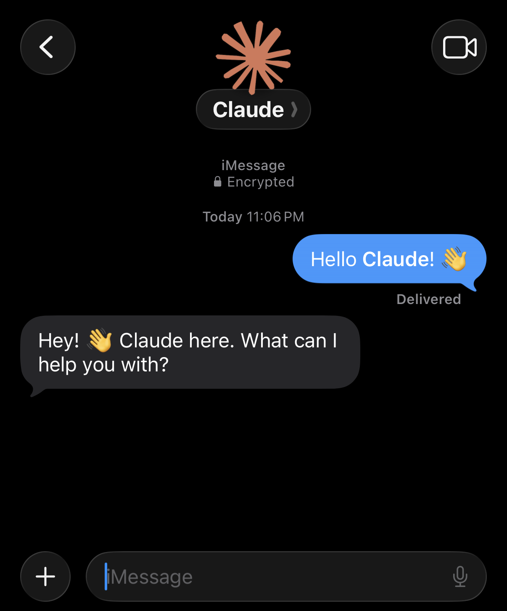
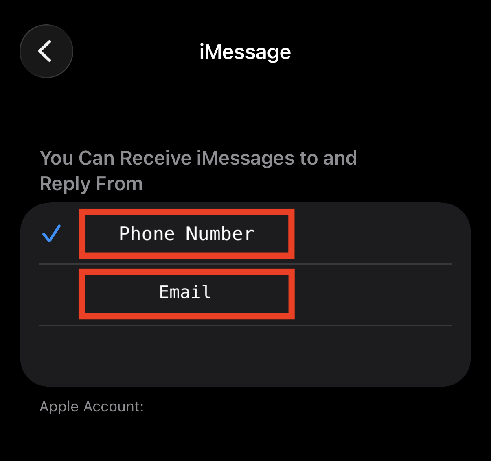
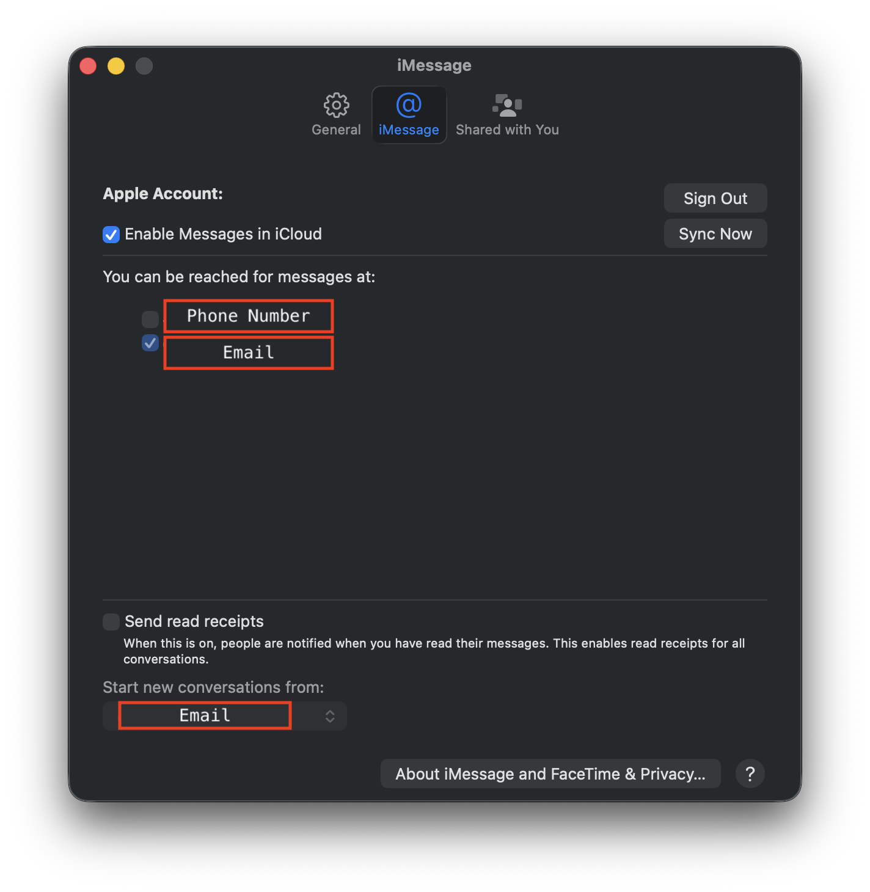
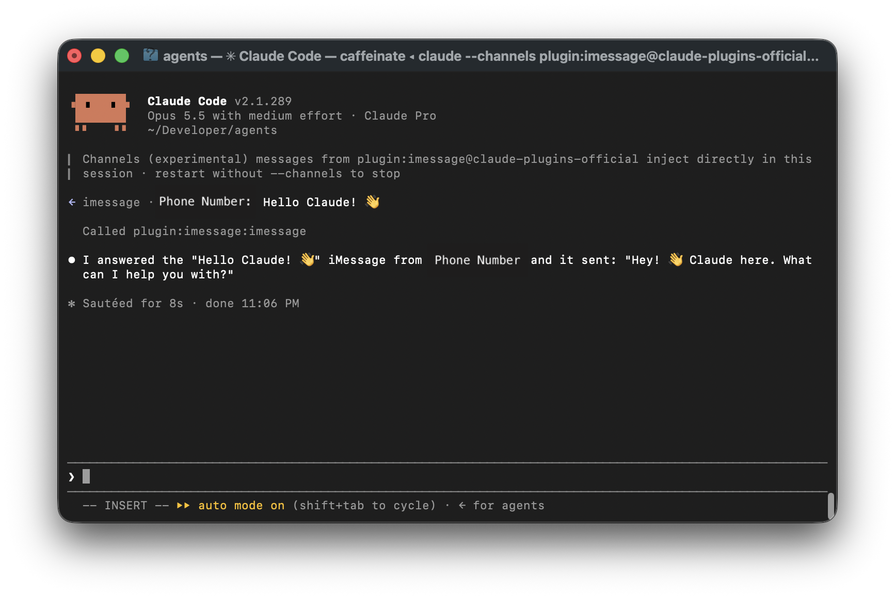

Cleaner iMessage Threads for Claude Code
October 2026
There's a common issue with the official Claude Code iMessage plugin where in self chat every message shows up twice in the thread, once as sent and once as received. The thread quickly becomes noisy and hard to use for anything serious.
But if your Mac only responds using your email address, and your iPhone only using your number, each message will show up once. It'll become a normal conversation between two contacts like any other.
iPhone: Phone Number Only
- Open Settings → Apps → Messages → Send & Receive.
- Under You Can Receive iMessages to and Reply From, check your phone number and uncheck your email.

Mac: Email Only
- Open Messages → Settings → iMessage.
- Under You can be reached for messages at, uncheck your phone number and check your email.
- Set Start new conversations from to your email.

Start Messaging
With Claude Code running on your Mac with the plugin enabled
(claude --channels plugin:imessage@claude-plugins-official), open Messages on
your iPhone and start a new conversation with your email address rather than
your own number.
The conversation should now read like any other chat, and of course you can add your email address as a separate named contact for a cleaner look.

Caveat
Your Mac won't get messages sent to your phone number anymore. Anyone who texts your number will only reach you on your iPhone.
For most this should be fine, particularly if you keep something like an iMac Mini aside exclusively for your agents. In any case, you can always change how your Mac can be reached as necessary.